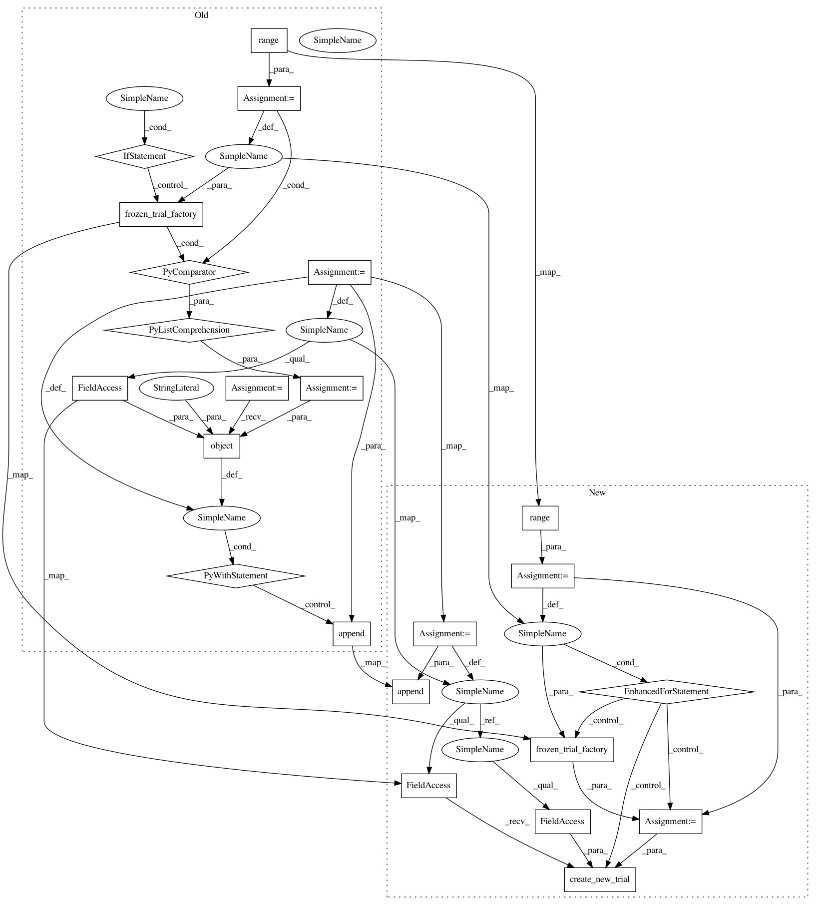

d1eb8732e44fac136862125dc7811f153f720b29,tests/samplers_tests/tpe_tests/test_sampler.py,,test_sample_independent_pruned_state,#,675
Before Change
def test_sample_independent_pruned_state() -> None:
Tests PRUNED state is treated differently from both FAIL and COMPLETE.
study = optuna.create_study()
dist = optuna.distributions.UniformDistribution(1.0, 100.0)
suggestions = []
for state in [
optuna.trial.TrialState.COMPLETE,
optuna.trial.TrialState.FAIL,
optuna.trial.TrialState.PRUNED,
]:
state_fn = build_state_fn(state)
past_trials = [frozen_trial_factory(i, dist=dist, state_fn=state_fn) for i in range(1, 30)]
trial = frozen_trial_factory(30)
sampler = TPESampler(n_startup_trials=5, seed=0)
with patch.object(study._storage, "get_all_trials", return_value=past_trials):
suggestions.append(sampler.sample_independent(study, trial, "param-a", dist))
assert len(set(suggestions)) == 3
def test_get_observation_pairs() -> None:
After Change
optuna.trial.TrialState.FAIL,
optuna.trial.TrialState.PRUNED,
]:
study = optuna.create_study()
state_fn = build_state_fn(state)
for i in range(1, 30):
trial = frozen_trial_factory(i, dist=dist, state_fn=state_fn)
study._storage.create_new_trial(study._study_id, template_trial=trial)
trial = frozen_trial_factory(30)
sampler = TPESampler(n_startup_trials=5, seed=0)
suggestions.append(sampler.sample_independent(study, trial, "param-a", dist))
assert len(set(suggestions)) == 3
In pattern: SUPERPATTERN
Frequency: 3
Non-data size: 23
Instances
Project Name: pfnet/optuna
Commit Name: d1eb8732e44fac136862125dc7811f153f720b29
Time: 2020-10-17
Author: hiroyuki.vincent.yamazaki@gmail.com
File Name: tests/samplers_tests/tpe_tests/test_sampler.py
Class Name:
Method Name: test_sample_independent_pruned_state
Project Name: pfnet/optuna
Commit Name: d1eb8732e44fac136862125dc7811f153f720b29
Time: 2020-10-17
Author: hiroyuki.vincent.yamazaki@gmail.com
File Name: tests/samplers_tests/tpe_tests/test_sampler.py
Class Name:
Method Name: test_sample_independent_ignored_states
Project Name: pfnet/optuna
Commit Name: d1eb8732e44fac136862125dc7811f153f720b29
Time: 2020-10-17
Author: hiroyuki.vincent.yamazaki@gmail.com
File Name: tests/samplers_tests/tpe_tests/test_sampler.py
Class Name:
Method Name: test_sample_relative_pruned_state
Project Name: pfnet/optuna
Commit Name: d1eb8732e44fac136862125dc7811f153f720b29
Time: 2020-10-17
Author: hiroyuki.vincent.yamazaki@gmail.com
File Name: tests/samplers_tests/tpe_tests/test_sampler.py
Class Name:
Method Name: test_sample_independent_pruned_state